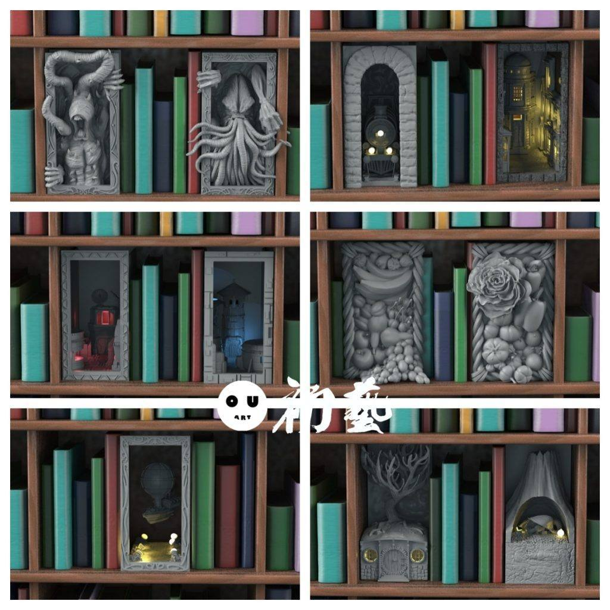
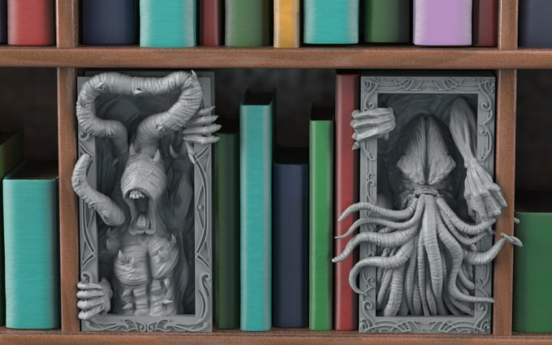
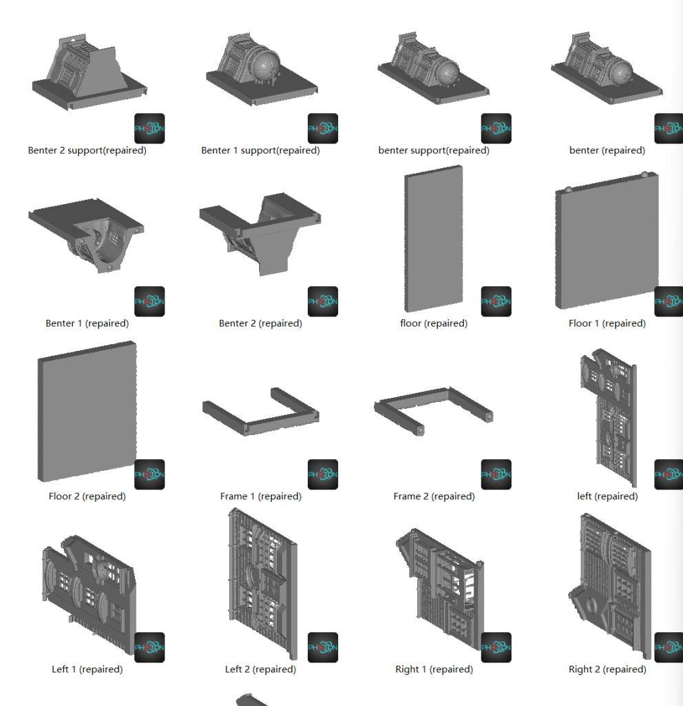
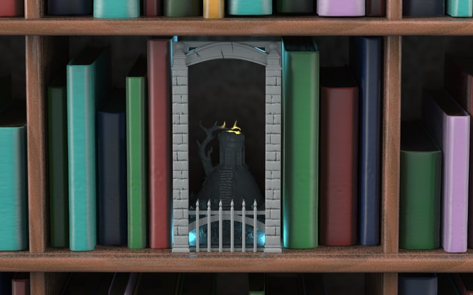
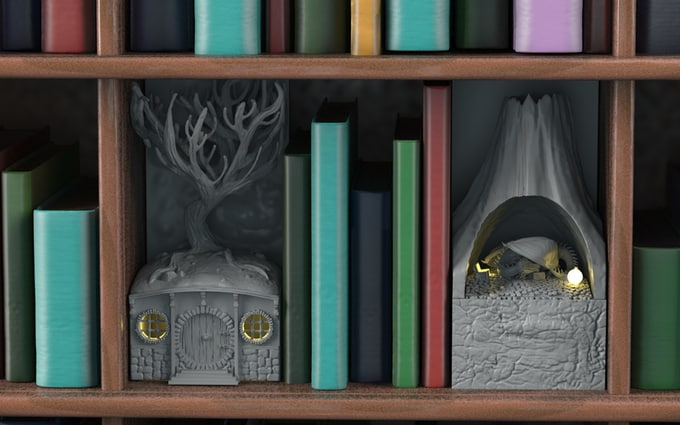
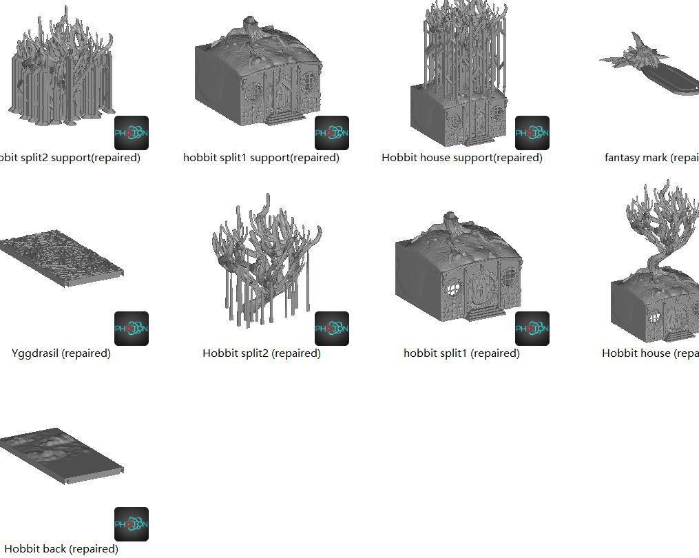
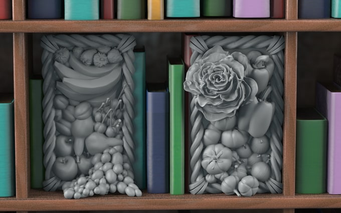

11月12日STl图纸文件分享
提取码
gxk9
今天分享一波书架小装饰，可以当书挡，也可以做小场景，最近工作室的场景课题有用到这类构图，希望这些模型文件的设计可以给大家一些启发。
以下直接链接加图片介绍。



链接：https://pan.baidu.com/s/13y1sH2FmjUv22n6myQTPfw
提取码：gxk9
链接：https://pan.baidu.com/s/1_wAdhQyGIM7EDgU0tH19Jg
提取码：72nh


链接：https://pan.baidu.com/s/1aGmdjPTMYbPVXr81pIrQOQ
提取码：ux7v
链接：https://pan.baidu.com/s/1BBSP-6SHWMZP1gkUk33XcA
提取码：cc3i


链接：https://pan.baidu.com/s/11wdhabTEB8BoSpXzBpL8uw
提取码：0wpg
链接：https://pan.baidu.com/s/1_WdmBM4AjLNpNqLyuSNYBw
提取码：v0zt


链接：https://pan.baidu.com/s/1r04YVun0io9zYiMlFTW6yA
提取码：mpy6


链接：https://pan.baidu.com/s/1fOzSIqnWCS59T7PMHHjRNg
提取码：3ge6


以上内容仅供个人使用（非商用）
ONLY for PERSONAL (NON-COMMERCIAL) use.
加群获得更多免费模型！